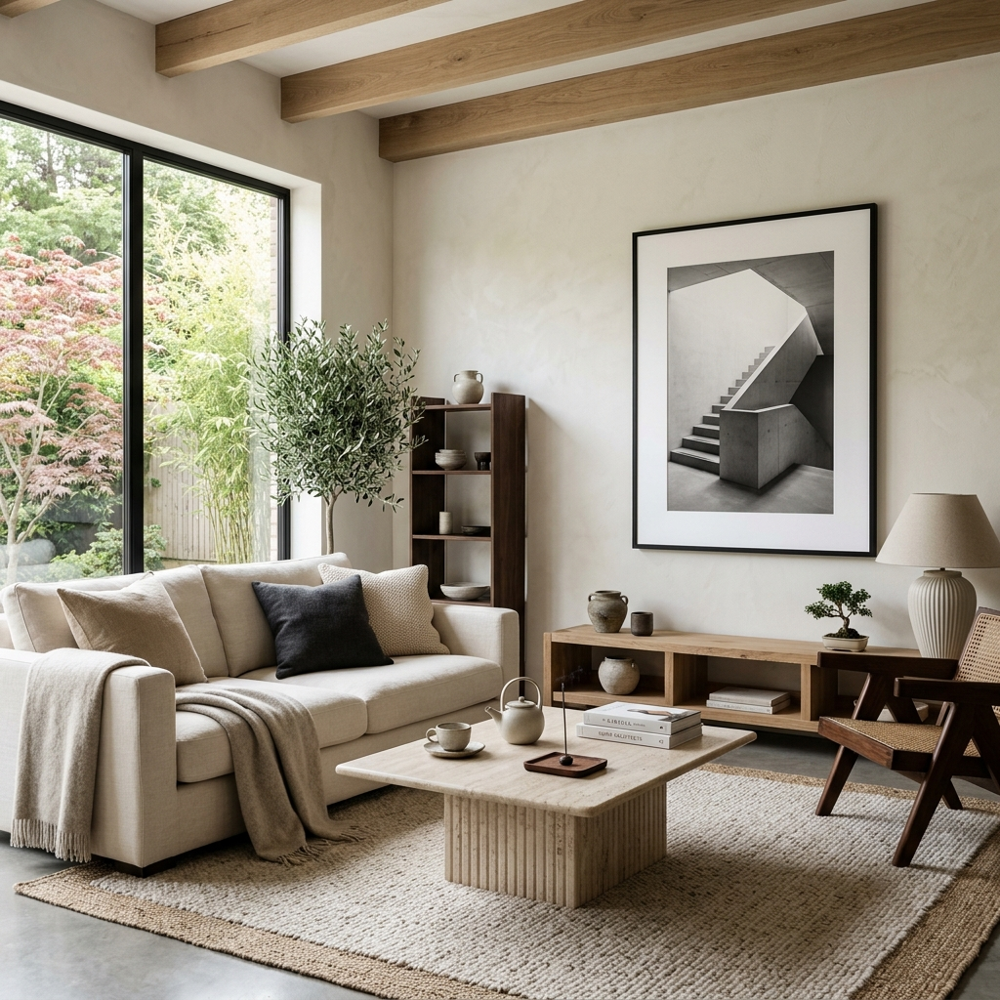
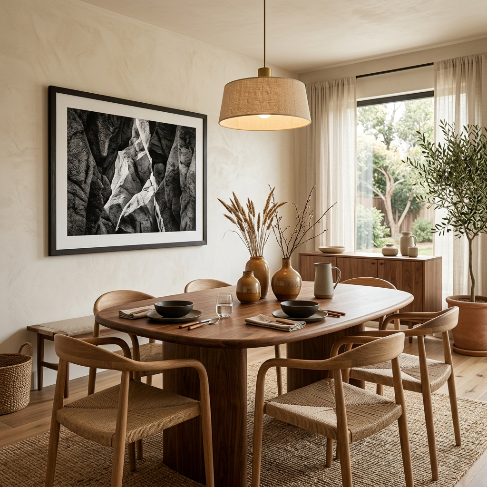
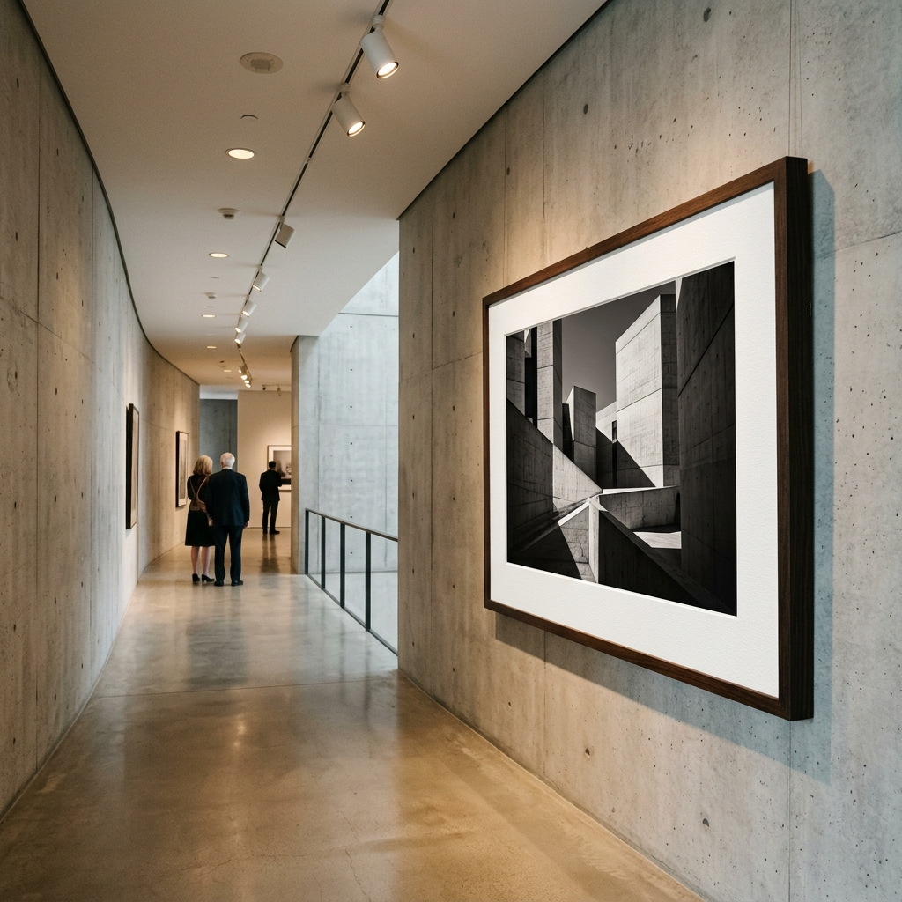

Libro de Estrategia, Curaduría Visual e Interiorismo para Fotografía Fine Art
AUTOR: JAVIER MIX ART & ANTIGRAVITY CONSULTING
Los estudios de diseño en Palermo, Recoleta y Zona Norte lideran una transformación estética basada en la pureza y los materiales nobles. A continuación, analizamos las tres corrientes dominantes en el mercado de lujo actual y cómo tu fotografía encaja en ellas.
El estilo Japandi es la fusión entre la simplicidad del minimalismo escandinavo y la calidez natural del diseño japonés. Utiliza paletas de colores tierra suaves (tonos travertino, lino, arena, tiza y madera de roble claro). En un espacio Japandi, los muros necesitan respirar. Se evita saturar con pequeños cuadros. En su lugar, se utiliza una única pieza de gran formato en blanco y negro con paspartú blanco puro y marco negro sutil.
Tu enfoque: Obras con composiciones arquitectónicas limpias, juegos de sombras geométricas suaves o retratos minimalistas de autor.

Esta corriente busca integrar la fluidez y las imperfecciones de la naturaleza dentro de los espacios construidos. Presenta muros con acabados de yeso rústico, mesas redondas de madera maciza, cerámicas artesanales y sillones curvos de lana bouclé.
Los espacios orgánicos necesitan fotografías de alto contraste y fuerte carga matérica. Obras enmarcadas en maderas oscuras o marcos negros carbón que contengan imágenes con texturas macro (detalles de piedra, agua, metal oxidado o contrastes lumínicos teatrales) que generen curiosidad visual.

Una reinterpretación contemporánea del brutalismo clásico. Se mantiene la honestidad del hormigón visto pero se suaviza mediante iluminación focal, spotlights y textiles premium. Esta arquitectura es monumental y dramática. Exige una galería o una obra de escala imponente montada sobre una pared de hormigón. El blanco y negro de autor cortado por el paspartú de algodón crea una barrera estética espectacular contra la textura del cemento.
Tu enfoque: Crónicas urbanas, retratos en claroscuro de alto dramatismo o series que jueguen con la escala monumental y el contraste de la luz sobre la ciudad (como tu serie Líneas de Paso).

Para hacer rentable tu arte y no depender de presupuestos pequeños, debes enfocar tus ventas hacia las empresas y profesionales del diseño. Tus compradores corporativos clave son:
El Gancho del Cierre (El Laboratorio Web): El 90% de los fotógrafos locales envían un archivo PDF plano por mail. Tú tienes una ventaja tecnológica insuperable: tu sitio web interactivo javiermix.ar/laboratorio. Invítalos a usar el Laboratorio. Explícales que allí pueden ver las escalas reales de las obras en muro y simular cómo cambia la obra de día y de noche (Modo Luz/Noche).
Para vender a un hotel de Recoleta o a un estudio de diseño de Palermo Chico, el acabado físico del cuadro debe ser impecable.
Imprime en laboratorios especializados usando papeles de base 100% algodón (pH neutro libre de ácido) que aseguren una durabilidad de más de 100 años sin decolorar. Recomendaciones en Buenos Aires:
Para tus primeras pruebas puedes ensamblar marcos y hacer maquetas, pero para la venta a clientes B2B se recomienda tercerizar con profesionales de conservación de Zona Oeste como Carmiña Enmarcados (Castelar) o Cuadros B.A. (Ramos Mejía) para asegurar ingletes perfectos y montajes libres de polvo.